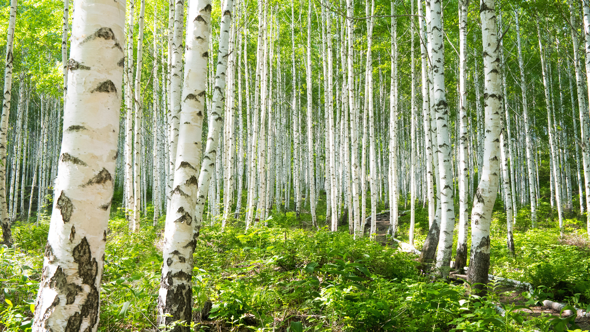

Links
Pioneers
Birch trees (family name: Betulaceae) have the special title of being a pioneer species. Pioneer species are organisms that grow despite the adversity of barren environments that are scarred form disasters like volcano eruptions, mudslides, or one of the many man-made environment destroyers. Birch trees like many other trees need moist soil to grow, however unlike other trees it is tolerant to acidic soil. This makes it easier to grow in places with low pH precipitation, preparing the environment for species that can't handle more extreme conditions.
